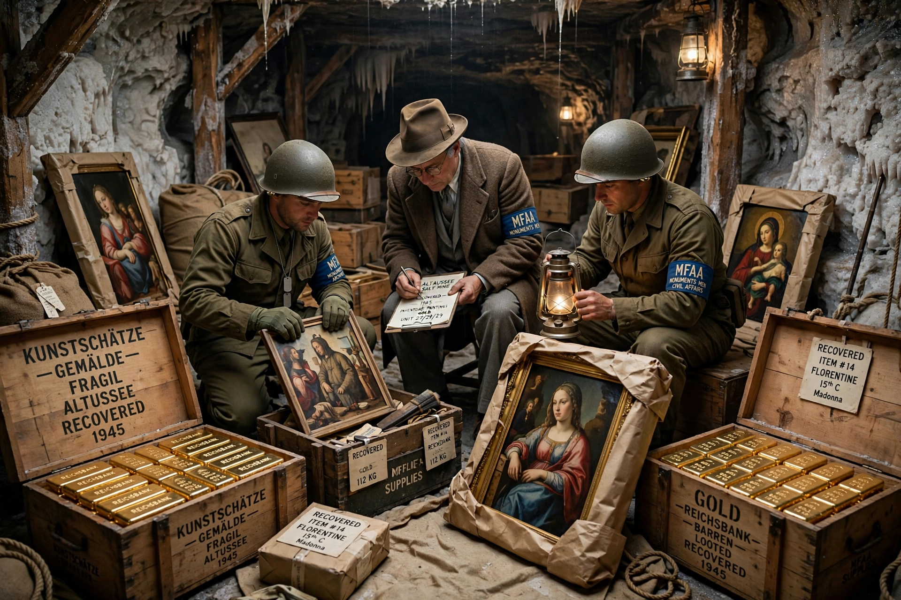

Period: 1933–1945
Key agency: Einsatzstab Reichsleiter Rosenberg (ERR)
Scale: Millions of artworks and cultural objects looted across Europe
Recovery: Monuments, Fine Arts, and Archives program ("Monuments Men")
Nazi plunder was the systematic looting of art and other cultural property by Nazi Germany during World War II and the years before it, from public and private collections in Germany and occupied Europe. Art was seized especially from Jewish owners, who were persecuted, deported, and murdered in the Holocaust.
Alfred Rosenberg's ERR catalogued and shipped looted works from France, the Low Countries, and Eastern Europe, while Hermann Göring amassed a vast personal collection. Hitler planned a Führermuseum in Linz stocked with seized masterpieces. Gold, currency, and valuables were also looted on a massive scale, feeding the Reichsbank.
After the war the Allied Monuments, Fine Arts, and Archives program recovered works from salt mines and castles such as Altaussee and Neuschwanstein, returning many to countries of origin. Restitution to families continues today, aided by the 1998 Washington Principles; notable cases include Klimt's Portrait of Adele Bloch-Bauer I, returned in 2006. The 2012 discovery of the Gurlitt collection in Munich renewed attention to unresolved claims.